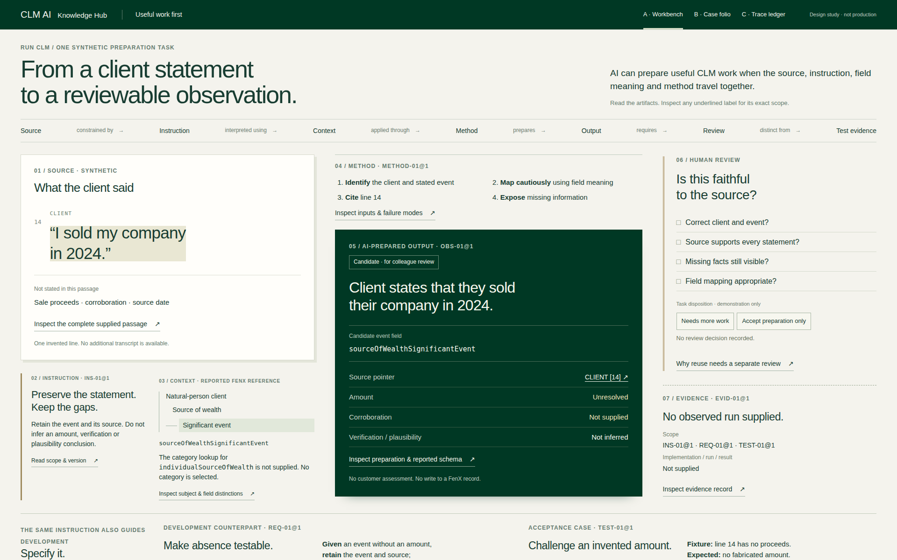
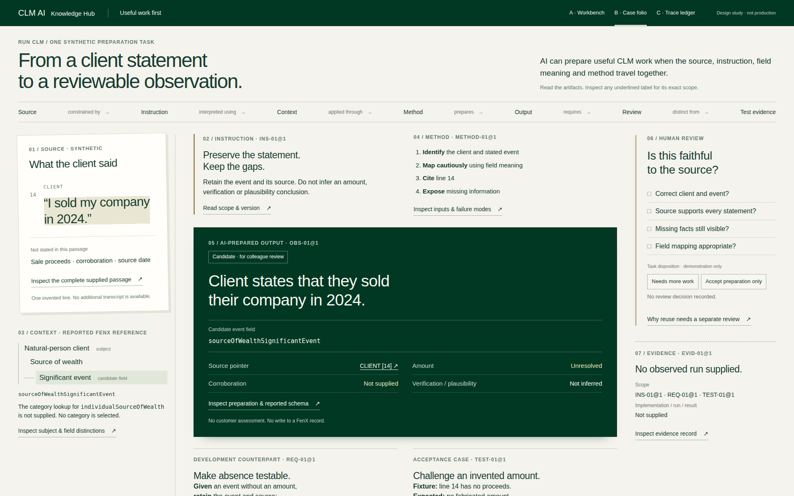
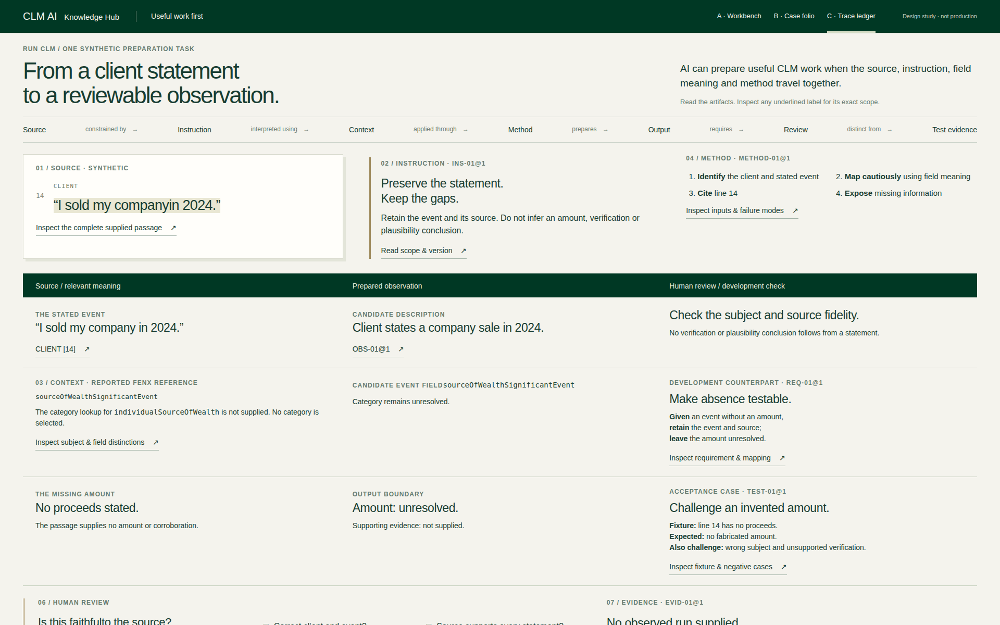
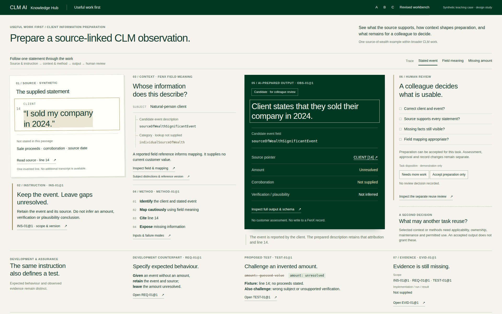
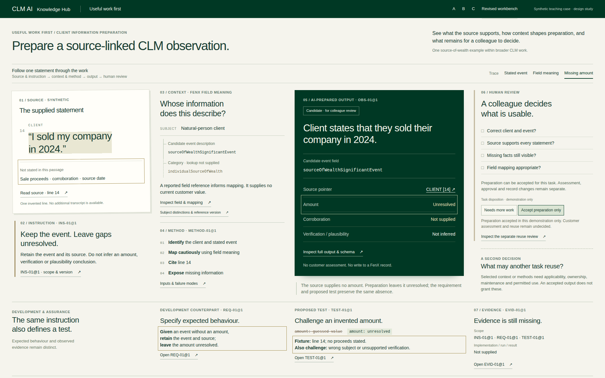
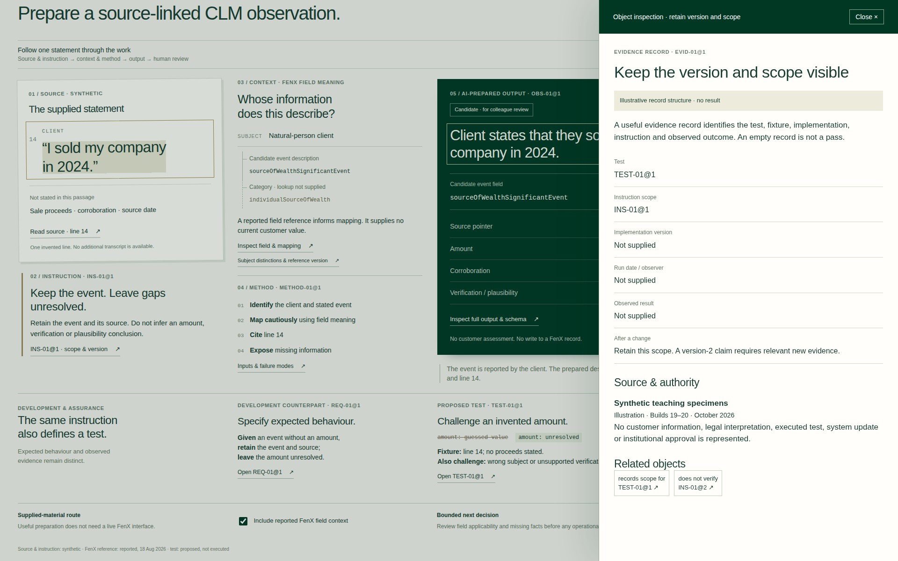

Useful work first — actual rendered comparison
Three independent layouts, rejection, structural revision, correction and browser recheck. These are Chromium captures at 1920×1200. Production remains unchanged. Open the interactive revised candidate →
Visual quality, semantic correctness and informational value are separate gates. Browser success establishes neither exceptional design nor independent reader comprehension. See the review record.
A · Rejected: the mechanism is incomplete in the first frame

B · Rejected: the output dominates the evidence

C · Rejected: accountability appears too late

Revised · Complete workbench, candidate for visual review

Interaction · Trace the missing amount across the work

Inspection · Evidence retains version, scope and absence
